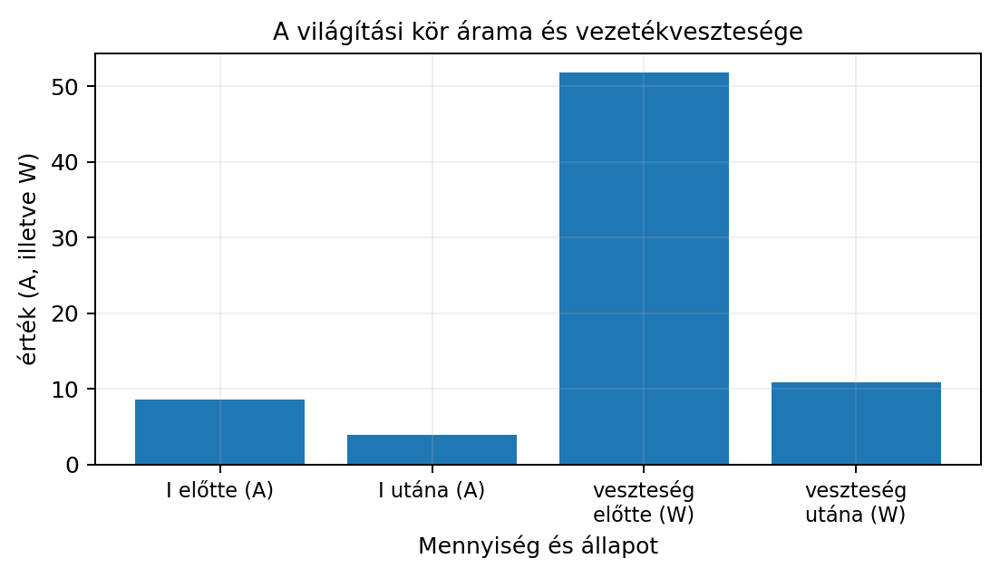

6.4.1 Számítási példa: egyfázisú
motor teljesítményei
1. példa.
Egy egyfázisú motort
hálózatra kötünk. A lakatfogóval mért áram
,
a teljesítménytényező
,
és az áram induktív jelleggel késik. Számítsuk ki
-et,
-t,
-t
és a fázisszöget!
Megoldás.
Adott:
,
,
.
Keresett:
,
,
,
.
A meddő tényező:
A fázisszög:
Ellenőrzés.
,
míg
.
A kis eltérés a kerekítésekből adódik, így az eredmény elfogadható.
6.4.2 Esettanulmány: világítási kör
fázisjavítással
Egy irodában 20 induktív előtétes fénycső üzemel egyetlen
-os
világítási körön. A lámpánkénti adatok az impedanciáról szóló alfejezet
(tankönyv, 6.3) 0. és 2/b. példájának szemléltető modelljéből
származnak:
,
,
a kompenzáló kondenzátor
.
Egy lámpa.
,
,
.
A kondenzátor
-t
ad, így
,
,
,
.
A teljes kör. A vezeték: 1,5 mm² réz, 30 m nyomvonal
(oda-vissza 60 m), 20 °C-on
;
egyszerűsítésként a teljes áramot a teljes hosszon vesszük
figyelembe.
Mennyiség (20 lámpa)
Kompenzálatlanul
Kompenzálva
hatásos teljesítmény
kb. 886 W
kb. 886 W
a kör árama
vezetékveszteség
kb. 52 W
kb. 11 W

A világítási kör árama és
vezetékvesztesége - Tanulási modell, számolt értékek: 20 lámpa, 230 V,
vezeték 0,70 Ω; az első két oszlop amperben, a második kettő wattban
értendő.
Védelem. A választás logikája
(Vezetékvédelem, koordináció és zárlati áram (tankönyv, 18.3)).
Kompenzálatlanul
:
egy 10 A-es kismegszakító közel van a határhoz, és a bekapcsolási
áramlökéssel is számolni kell. Kompenzálva
,
a tartós áramra bőven marad tartalék; a kondenzátorok bekapcsolási
áramlökése miatt azonban az egy kismegszakítóra köthető lámpaszámot a
gyártói adat korlátozza (ellenőrizendő: lámpatest- és
megszakító-adatlap).
Valós eset (példaadat). Évekkel később a kör
áramfelvétele 4 A-ről 7 A-re nőtt, pedig új lámpa nem került rá. A gyanú
a kiszáradt, kapacitását vesztett kondenzátor. A vizsgálat lépései:
lámpánként lakatfogós árammérés a mérésre alkalmas, oktatott
személlyel, érintés ellen védett mérési ponton: a hibás lámpa kb. 0,2 A
helyett kb. 0,43 A-t vesz fel;
a kör feszültségmentesítése az öt biztonsági szabály szerint;
a gyanús kondenzátor kisütése ellenálláson át (Villamos tér és
kondenzátor (tankönyv, 5.1), Kondenzátorok kapcsolása és az RC-tag
(tankönyv, 5.2)), egyik kivezetésének lekötése és a kapacitás
mérése;
az eltérő (tűrésen kívüli, duzzadt vagy folyó) kondenzátor cseréje
azonos, hálózati használatra minősített típusra, majd a köráram
ellenőrző mérése.
Ha a fénycsöveket később LED-es világításra cserélik, a
teljesítménytényező kérdése más jellegű lesz: ott a torzítás és a
bekapcsolási áramlökés a mérvadó, a régi kompenzáló kondenzátorokat
pedig a gyártói utasítás szerint kell kezelni.
6.4.3 Önellenőrzés
Igaz vagy hamis? Ha egy fogyasztóra
,
és
,
akkor a hatásos teljesítmény
.
Számítsd ki a fenti adatokból
-t
és
-t!
Mi a hiba ebben az összefüggésben:
?
Miért nem egyenlő a motor adattábláján szereplő kW a villamos
hatásos teljesítménnyel?
Miért csökken a hálózati áram a fázisjavítás után, ha a hatásos
teljesítmény változatlan?
Rajzold le a teljesítményháromszöget, és jelöld be, hol van az
induktív meddő teljesítmény!
6.4.4 Gyakorló generátor:
teljesítmények és fázisjavítás
A teljesítménytényező és a fázisjavítás számítását sok feladaton
érdemes begyakorolni. A HTML-kiadás generátora négy szinten ad véletlen
feladatot: (A)
,
,
,
az áramból és a
-ből;
(B) wattmérős mérés vagy motoradattábla (hatásfokkal); (C) fázisjavító
kondenzátor méretezése; (D) adott kondenzátor beépítése utáni új
és áram, a túlkompenzálás felismerésével. A beírt eredményt ±1 %-os
tűréssel ellenőrzi, felismeri a tipikus hibákat
(;
a
-k
különbsége a tangensek különbsége helyett; a hatásfok vagy az
kihagyása), és lépésenként megmutatja a megoldást. Az alábbi mintakártya
a C szint egy feladatát mutatja.
Statikus változat (mint a PDF-ben)
Mintafeladat a teljesítmény- és fázisjavítás-generátorból:
fázisjavító kondenzátor méretezése lépésenkénti megoldással
Oldd meg előbb a rögzített sort a kulcs megnézése nélkül; ha
valamelyik C- vagy D-szintű feladat nem megy, a fázisjavítás elvét
(tankönyv, 6.4) és az áramháromszöget nézd át újra.
Rögzített feladatsor. A HTML-kiadás gyakorlója
végtelen sok hasonló feladatot ad; az alábbi kilenc feladat rögzített
(az utolsó a fejezet kompresszoros példája), a megoldókulcs a sor végén
található.
(A) Egy 230 V-os egyfázisú fogyasztó árama I = 6 A,
teljesítménytényezője cos φ = 0,75 (induktív). Mekkora S, P, Q és
φ?
(A) Egy 230 V-os egyfázisú fogyasztó árama I = 10
A, teljesítménytényezője cos φ = 0,60 (induktív). Mekkora S, P, Q és
φ?
(A) Egy 400 V-os (vonali feszültségre kötött)
egyfázisú fogyasztó árama I = 2,5 A, teljesítménytényezője cos φ = 0,80
(induktív). Mekkora S, P, Q és φ?
(C) Egy 230 V-os egyfázisú fogyasztó hatásos
teljesítménye P = 1035 W, cos φ1 = 0,75. A
teljesítménytényezőt cos φ2 = 0,95-re javítjuk (50 Hz).
Mekkora QC és C kell, és mennyi az áram előtte és utána?
(C) Egy 230 V-os egyfázisú fogyasztó hatásos
teljesítménye P = 3000 W, cos φ1 = 0,60. A
teljesítménytényezőt cos φ2 = 0,95-re javítjuk (50 Hz).
Mekkora QC és C kell, és mennyi az áram előtte és utána?
(C) Egy 230 V-os egyfázisú fogyasztó hatásos
teljesítménye P = 2000 W, cos φ1 = 0,70. A
teljesítménytényezőt cos φ2 = 1,00-re javítjuk (50 Hz).
Mekkora QC és C kell, és mennyi az áram előtte és utána?
(C) Egy 230 V-os egyfázisú fogyasztó hatásos
teljesítménye P = 800 W, cos φ1 = 0,50. A
teljesítménytényezőt cos φ2 = 0,90-re javítjuk (50 Hz).
Mekkora QC és C kell, és mennyi az áram előtte és utána?
(B) Egy 230 V-os egyfázisú motor adattáblája: P =
1,5 kW (leadott), η = 0,80, cos φ = 0,90. Mekkora áramot vesz fel a
hálózatból?
(D) Egy 228 V-os egyfázisú fogyasztó hatásos
teljesítménye P = 2100 W, cos φ1 = 0,65. Párhuzamosan C = 30
µF kondenzátort kötünk (50 Hz). Mekkora lesz a cos φ és a hálózati áram,
és milyen jellegű lesz a kör?
Megoldókulcs.
A rögzített feladatsor megoldókulcsa
Feladat
Szint
Eredmény
1.
A
S = 1,38 kVA; P = 1,035 kW; Q = 912,8 var; φ = 41,4°
2.
A
S = 2,3 kVA; P = 1,38 kW; Q = 1,84 kvar; φ = 53,1°
3.
A
S = 1 kVA; P = 800 W; Q = 600 var; φ = 36,9°
4.
C
QC = 573 var; C = 34,5 µF; I1 = 6 A;
I2 = 4,74 A
5.
C
QC = 3,01 kvar; C = 181 µF; I1 = 21,7 A;
I2 = 13,7 A
6.
C
QC = 2,04 kvar; C = 123 µF; I1 = 12,4 A;
I2 = 8,7 A
7.
C
QC = 998 var; C = 60,1 µF; I1 = 6,96 A;
I2 = 3,86 A
Látszólagos teljesítmény: S = U · I = 230 V · 6 A = 1380 VA.
Hatásos teljesítmény: P = S · cos φ = 1380 VA · 0,75 = 1035 W.
sin φ = √(1 − cos² φ) = √(1 − 0,75²) = 0,6614; meddő teljesítmény: Q = S
· sin φ = 912,8 var.
Fázisszög: φ = arccos 0,75 = 41,4°. Ellenőrzés: √(P² + Q²) = 1380 VA = S
✓
Látszólagos teljesítmény: S = U · I = 230 V · 10 A = 2300 VA.
Hatásos teljesítmény: P = S · cos φ = 2300 VA · 0,60 = 1380 W.
sin φ = √(1 − cos² φ) = √(1 − 0,60²) = 0,8000; meddő teljesítmény: Q = S
· sin φ = 1840 var.
Fázisszög: φ = arccos 0,60 = 53,1°. Ellenőrzés: √(P² + Q²) = 2300 VA = S
✓
Látszólagos teljesítmény: S = U · I = 400 V · 2,5 A = 1000 VA.
Hatásos teljesítmény: P = S · cos φ = 1000 VA · 0,80 = 800 W.
sin φ = √(1 − cos² φ) = √(1 − 0,80²) = 0,6000; meddő teljesítmény: Q = S
· sin φ = 600 var.
Fázisszög: φ = arccos 0,80 = 36,9°. Ellenőrzés: √(P² + Q²) = 1000 VA = S
✓
tg φ1 = √(1 − 0,75²) / 0,75 = 0,8819; tg φ2 =
0,3287.
QC = P · (tg φ1 − tg φ2) = 1035 W ·
(0,8819 − 0,3287) = 572,6 var.
C = QC / (2π f U²) = 572,6 var / (314,16 · 230² V²) = 34,5
µF.
Áram előtte: I1 = P / (U cos φ1) = 6 A; utána:
I2 = P / (U cos φ2) = 4,74 A (a hatásos
teljesítmény nem változik).
tg φ1 = √(1 − 0,60²) / 0,60 = 1,3333; tg φ2 =
0,3287.
QC = P · (tg φ1 − tg φ2) = 3000 W ·
(1,3333 − 0,3287) = 3014 var.
C = QC / (2π f U²) = 3014 var / (314,16 · 230² V²) = 181
µF.
Áram előtte: I1 = P / (U cos φ1) = 21,7 A; utána:
I2 = P / (U cos φ2) = 13,7 A (a hatásos
teljesítmény nem változik).
tg φ1 = √(1 − 0,70²) / 0,70 = 1,0202; tg φ2 =
0,0000.
QC = P · (tg φ1 − tg φ2) = 2000 W ·
(1,0202 − 0,0000) = 2040 var.
C = QC / (2π f U²) = 2040 var / (314,16 · 230² V²) = 123
µF.
Áram előtte: I1 = P / (U cos φ1) = 12,4 A; utána:
I2 = P / (U cos φ2) = 8,7 A (a hatásos
teljesítmény nem változik).
tg φ1 = √(1 − 0,50²) / 0,50 = 1,7321; tg φ2 =
0,4843.
QC = P · (tg φ1 − tg φ2) = 800 W ·
(1,7321 − 0,4843) = 998,2 var.
C = QC / (2π f U²) = 998,2 var / (314,16 · 230² V²) = 60,1
µF.
Áram előtte: I1 = P / (U cos φ1) = 6,96 A; utána:
I2 = P / (U cos φ2) = 3,86 A (a hatásos
teljesítmény nem változik).
Az adattábla P = 1,5 kW-ja a tengelyen leadott teljesítmény; a
felvett: Pfel = Ple / η = 1500 W / 0,80 = 1875
W.
Áram: I = Pfel / (U · cos φ) = 1875 W / (230 V · 0,90) = 9,06
A.
A fogyasztó meddő teljesítménye: Q1 = P · tg
φ1 = 2100 W · 1,1691 = 2455 var.
A kondenzátoré: QC = 2π f U² C = 314,16 · 228² · 30 µF =
489,9 var.
Eredő meddő: Q2 = Q1 − QC = 1965 var
(még induktív).
S2 = √(P² + Q2²) = 2876 VA; cos φ2 = P
/ S2 = 0,730; I2 = S2 / U = 12,6
A.
6.4.5 Feladatok
1. feladat (A). Definiáld röviden a hatásos, meddő
és látszólagos teljesítményt, valamint a teljesítménytényezőt!
2. feladat (A). Egy
hálózatra kapcsolt fűtőbetét ellenállása
.
Számítsd ki
,
,
,
és
értékét!
3. feladat (B). Egy egyfázisú motor
feszültségről
áramot vesz fel, a wattmérővel mért hatásos teljesítmény
.
Számítsd ki
,
,
és
értékét!
4. feladat (B). Az előző motort fázisjavítással
-re
akarjuk hozni. Mekkora
és mekkora
szükséges
,
hálózaton?
5. feladat (C). Egy műhelyben
feszültségről egy fogyasztó
hatásos teljesítményt vesz fel,
teljesítménytényezővel. A betápláló kismegszakító névleges árama
.
Elfér-e a fogyasztó a védelmen? Ha nem, mekkora
és
kell ahhoz, hogy a javított teljesítménytényező
legyen, és az áram
alá csökkenjen?
6. feladat (D). Egy mérés során a következő
értékeket rögzítik:
,
,
.
Számítsd ki
-t,
-t
és
-t!
Ellenőrizd, hogy reális-e a kapott
,
és nevezd meg, milyen műszerekkel lehet a mérést elvégezni!
7. feladat (B). Egy PFC nélküli, 20 W-os LED-panel
-on
a TRMS lakatfogó szerint
-t
vesz fel (példaadat). Mekkora a
?
Javítható-e fázisjavító kondenzátorral? Indokold!
8. feladat (B). Egy egyfázisú motor adattáblája:
leadott teljesítmény
,
,
,
(példaadat). Számítsd ki a felvett hatásos teljesítményt, a látszólagos
teljesítményt, az áramot és a meddő teljesítményt!
6.4.6 Megoldások
Önellenőrzés – válaszok
Igaz.
.
;
;
.
A látszólagos teljesítmény nem algebrai, hanem Pitagorasz-tétel
szerinti összeg:
.
Az adattáblán a motor leadott mechanikai teljesítménye szerepel, a
villamos felvett hatásos teljesítmény ennél nagyobb, mert a
veszteségeket is fedezni kell.
A fázisjavítás csökkenti a hálózatból felvett meddő teljesítményt,
így
és vele az áram is csökken, miközben
változatlan.
A háromszögben a vízszintes
,
az átfogó
,
az induktív
pedig a függőleges pozitív irányba mutat; kapacitív
esetén lefelé mutatna.
Feladatok – megoldások
1. feladat.
A hatásos teljesítmény a hasznos munkává alakuló átlagos teljesítmény,
jele
,
mértékegysége W. A meddő teljesítmény a reaktív elemek energialengésének
csúcsteljesítménye, jele
,
mértékegysége var. A látszólagos teljesítmény a feszültség és az áram
effektív értékének szorzata, jele
,
mértékegysége VA. A teljesítménytényező a hatásos és látszólagos
teljesítmény hányadosa:
.
2. feladat.
Adott:
,
.
Az áram:
Fűtőbetétnél
,
ezért:
Ellenőrzés.
,
tehát az eredmény helyes.
3. feladat.
Adott:
,
,
.
Keresett:
,
,
,
.
Ellenőrzés.
,
és
,
ami kerekítési pontossággal egyezik.
4. feladat.
Adott:
,
,
.
Először a tangenseket számoljuk:
A szükséges meddőteljesítmény:
A kondenzátor kapacitása:
5. feladat.
Adott:
,
,
,
.
Az eredeti áram:
Ez meghaladja a
-es
kismegszakító névleges áramát, tehát a fogyasztó nem fér el.
A tangensek:
A javított áram:
tehát a
alatti cél teljesül.
6. feladat.
Adott:
,
,
.
A
reális érték egy induktív fogyasztónál, például motornál. A méréshez
voltmérő, lakatfogó vagy beépített ampermérő és wattmérő szükséges. A
wattmérő a hatásos teljesítményt méri, a feszültség- és árammérőből a
látszólagos teljesítményt számoljuk.
7. feladat.
;
.
Kondenzátorral érdemben nem javítható: a rossz
oka a torzítás (az áram rövid, csúcsos impulzusokból áll), nem az
induktív eltolás; aktív PFC-s készülék vagy szűrő kell. Megjegyzés: egy
nem valódi effektívértéket mérő (nem TRMS) műszer az ilyen áramot
hibásan, jellemzően a valóságosnál kisebbnek mutathatja (Multiméter,
lakatfogó és mérési kategóriák (tankönyv, 8.2)).
8. feladat.
;
;
;
.
6.4.7 A kis
következménye és a fázisjavítás elve – példák és gyakorlók
2. példa.
Az előző,
hatásos teljesítményű,
teljesítménytényezőjű fogyasztót
-re
akarjuk javítani
,
hálózaton. Mekkora kondenzátorra van szükség?
Megoldás.
Először a szögfüggvényeket határozzuk meg:
A szükséges meddőteljesítmény:
A kapacitás:
Ellenőrzés.
Ha
-ot
beépítünk, akkor
,
tehát a számítás konzisztens.
3. példa – adattáblától az áramig. A motor
adattábláján szereplő kW a tengelyen leadott
teljesítmény; a vezeték és a kismegszakító szempontjából a felvett áram
számít
().
Ha valaki a hibás
-tal
és
nélkül számol,
jön ki: ez 28 %-os alulbecslés. ∎
Ha az adattáblán szerepel a névleges áram
(),
azt vesd össze a számolttal, és méretezéskor az adattábla az elsődleges.
Részterhelésen a hatásfok és a
is romlik, ezért a lakatfogóval mért áram nem arányos a terheléssel
(Szlip, nyomaték, jelleggörbe és adattábla (tankönyv, 26.2)).